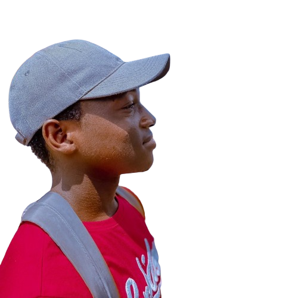

OUR PURPOSE
At Astrics, we are driven by the belief that education through exploration can inspire a lifelong passion for science and discovery. We strive to bridge the gap between academic knowledge and public curiosity by providing a platform that is both informative and captivating.
Why Explore with Astrics?
- Daily Images from NASA: Each day, we deliver stunning astronomical images sourced from NASA's vast archives. These images capture everything from the intricate structures of distant galaxies to the dynamic atmospheres of our solar system’s planets, each accompanied by insightful educational content.
- Educational Insights: Every image is paired with detailed explanations and scientific context, crafted to inspire and educate. Our goal is to make learning about astronomy as engaging as it is enlightening.
- User-Friendly Interface: Astrics is designed to ensure that everyone, regardless of their technological skill level, can easily navigate and enjoy our vast resources.
MEET THE DEVELOPMENT TEAM
We are proud to introduce the talented and dedicated team behind Astrics. Our diverse group of developers has worked tirelessly to bring this visionary project to life, ensuring that the wonders of the cosmos are accessible to students, researchers, and astronomy enthusiasts worldwide. Their combined expertise, creativity, and commitment have been the driving force behind Astrics' success

Wiseman Umanah
Wiseman Umanah
Wiseman Umanah
Wiseman Umanah
Wiseman Umanah
Wiseman Umanah
Wiseman Umanah
Wiseman Umanah